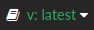

ROS 1 的 ROS 桥接安装¶
本节介绍如何在 Linux 上安装 ROS 桥接器以与 ROS 1 一起使用。您将找到先决条件、安装步骤、如何运行基本包以确保一切正常运行以及运行测试的命令。
!!! 重要 ROS 桥尚未在 Windows 中进行测试。
在你开始之前¶
在使用 ROS 桥之前，您需要满足以下软件要求：
- 根据您的操作系统安装 ROS：
- ROS Melodic — 适用于 Ubuntu 18.04 (Bionic)
- ROS Noetic — 适用于 20.04 (Focal)
- 根据您的需要，可能需要额外的 ROS 软件包。强烈建议使用 rviz 来可视化 ROS 数据。
- Carla 0.9.7 或更高版本 — 以前的版本与 ROS 桥不兼容。按照 快速启动安装 或针对 Linux 进行构建。建议尽可能将 ROS 桥接版本与 Carla 版本匹配。
ROS 桥安装¶
有两个选项可用于安装 ROS 桥接器：
- 通过 Debian 存储库中的 apt 工具进行安装。仅适用于 Ubuntu 18.04。
- 从 GitHub 上的源存储库克隆。
下面详细介绍这两种方法。
!!! 重要 要安装 0.9.10 之前的 ROS 桥接器版本，您可以在 此处 找到旧版本的 Carla 文档中的说明。使用窗口右下角的面板更改为适当版本的文档。

A. 使用 Debian 存储库¶
!!! 笔记 此安装方法仅适用于 Ubuntu 18.04。对于其他支持的发行版，请参阅 B 部分：使用源存储库 。
1. 在您的系统中设置 Debian 存储库：
sudo apt-key adv --keyserver keyserver.ubuntu.com --recv-keys 1AF1527DE64CB8D9
sudo add-apt-repository "deb [arch=amd64] http://dist.carla.org/carla $(lsb_release -sc) main"
2. 安装ROS桥：
最新版本：
sudo apt-get update # 更新Debian包索引 sudo apt-get install carla-ros-bridge # 安装最新的ROS桥接版本，或更新当前的安装通过向命令添加版本标签来安装特定版本：
apt-cache madison carla-ros-bridge # 列出ROS桥接的可用版本 sudo apt-get install carla-ros-bridge=0.9.10-1 # 在这种情况下，“0.9.10”指的是ROS桥接版本，“1”指的是Debian版本
3. 检查 /opt/ 文件夹中ROS桥是否已安装成功。
B. 使用源存储库¶
1. 创建catkin工作区：
mkdir -p ~/carla-ros-bridge/catkin_ws/src
2. 克隆 ROS 桥存储库和子模块：
cd ~/carla-ros-bridge
git clone --recurse-submodules https://github.com/carla-simulator/ros-bridge.git catkin_ws/src/ros-bridge
5. 根据您安装的 ROS 版本设置 ROS 环境：
source /opt/ros/<melodic/noetic>/setup.bash
cd catkin_ws
rosdep update
rosdep install --from-paths src --ignore-src -r
7. 构建ROS桥：
catkin build # alternatively catkin_make
运行 ROS 桥¶
1. 按照安装 Carla 时使用的安装方法启动 Carla 服务器：
# 包版本在 carla 根文件夹
./CarlaUE4.sh
# Debian 安装在 `opt/carla-simulator/`
./CarlaUE4.sh
# 从 carla 根文件夹中的源版本构建
make launch
2. 将正确的 Carla 模块添加到您的 Python 路径：
export CARLA_ROOT=<path-to-carla>
export PYTHONPATH=$PYTHONPATH:$CARLA_ROOT/PythonAPI/carla/dist/carla-<carla_version_and_arch>.egg:$CARLA_ROOT/PythonAPI/carla
3. 根据 ROS 桥的安装方法添加 ROS 桥工作空间的源路径。每次您想要运行 ROS 桥接器时，都应该在每个终端中完成此操作：
# 用于 debian 安装 ROS 桥。根据已安装的 ROS 版本更改命令。
source /opt/carla-ros-bridge/<melodic/noetic>/setup.bash
# 为 GitHub 库安装 ROS 桥
source ~/carla-ros-bridge/catkin_ws/devel/setup.bash
!!! 重要 源路径可以永久设置，但在使用其他工作区时可能会导致冲突。
4. 启动 ROS 桥。使用任何可用的不同启动文件来检查安装：
# 选项1:启动 ros 桥
roslaunch carla_ros_bridge carla_ros_bridge.launch
# 选项2:启动ros桥和一个示例自我车辆
roslaunch carla_ros_bridge carla_ros_bridge_with_example_ego_vehicle.launch
!!! 笔记
如果您收到错误：`ImportError: no module named CARLA` 则缺少 CARLA Python API 的路径。apt 安装会自动设置路径，但其他安装可能会丢失该路径。
您需要将适当的`.egg`文件添加到您的 Python 路径中。您将在`/PythonAPI/`或`/PythonAPI/dist/`中找到该文件，具体取决于 Carla 安装。使用与您安装的 Python 版本相对应的`.egg`文件，使用文件的完整路径执行以下命令：
`export PYTHONPATH=$PYTHONPATH:path/to/carla/PythonAPI/<your_egg_file>`
建议通过将前一行添加到`.bashrc`文件中来永久设置此变量。
要检查 Carla 库是否可以正确导入，请运行以下命令并等待成功消息：
python3 -c 'import carla;print("Success")' # python3
or
python -c 'import carla;print("Success")' # python2
测试¶
使用 catkin 执行测试：
1. 构建包：
catkin_make -DCATKIN_ENABLE_TESTING=0
2. 运行测试：
rostest carla_ros_bridge ros_bridge_client.test